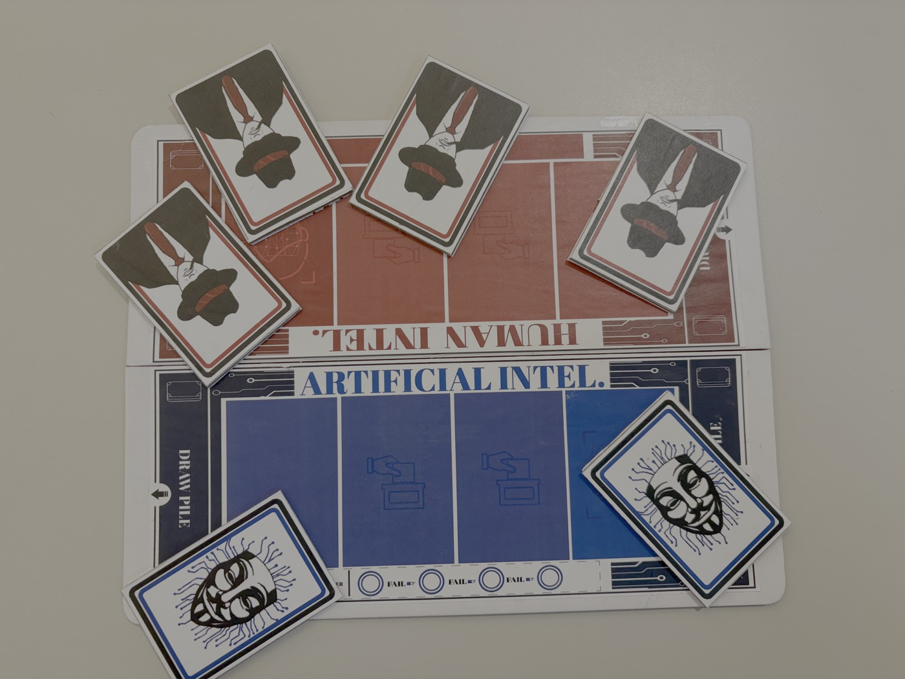

Deepfake'd: An Educational Board Game About AI Literacy
Building critical thinking skills for the age of synthetic media

ROLE
Product Designer, User Researcher, Visual Systems Designer
TEAM
4 person multidisciplinary team
TIMELINE
February – May 2025 (14 weeks)
The Challenge
Young adults aged 12 to 18 encounter AI generated content daily but lack literacy tools to critically evaluate digital information.
Primary Users (College Students)
Experience algorithm fatigue and declining content quality
Secondary Users (Teachers/Parents)
Distrust tech companies to provide solutions
Core Need
Accessible educational tools that build media literacy
Research & Discovery
Methodology
User interviews with college students, teachers, and parents to understand how different stakeholder groups experience and respond to AI generated media.
Key User Archetypes
Matt
College Student / Primary User
Experiences daily exposure to AI content without tools to critically assess authenticity
Patricia
Parent / Secondary User
Concerned about digital literacy but skeptical of tech industry solutions
Jessica
Teacher / Secondary User
Needs accessible classroom tools to teach media literacy concepts
Ideation & Concept Development
Design Strategy
Transform abstract AI literacy concepts into experiential learning through gameplay. By creating an interactive environment where players must distinguish between human and AI entities, we mirror the real world challenge of evaluating digital content authenticity.
Inspiration & Mechanics
Game Influences
Games of deception and deduction (Guess Who, Secret Hitler) informed the core mechanic of hidden role gameplay.
Core Mechanic
Players must identify AI among humans, directly mirroring real world content evaluation challenges and building critical assessment skills.
Design Solution
Key Game Capabilities
Article Cards
Educational content about AI and deepfakes integrated directly into gameplay
Role System
Human vs. AI teams create tension that mirrors digital trust issues
Voting Mechanics
Competition and elimination systems teach consequences of misinformation
Chancellor Role
Rotating spotlight role adds strategic depth and engagement
Final Product Components

Prototyping & Iteration
Evolution
Early card designs lacked playfulness and clear team differentiation. Through iterative testing, we introduced stronger color coding, simplified iconography, and character driven illustrations that made gameplay intuitive while maintaining educational depth.
Testing Insights
Gameplay testing revealed critical refinements needed in rules, roles, and point systems:
- •Simplified voting mechanics to reduce confusion during competitive rounds
- •Balanced role distribution to ensure fair gameplay across player counts
- •Refined article card content based on comprehension feedback from target age group
Accessibility Considerations
Foldable board design and custom box packaging enable easy transport for classroom and family settings. Compact form factor ensures the game can be stored and deployed in educational contexts without logistical barriers.
Final Product
Components
- ✓Custom designed game box
- ✓Player role cards with hidden team assignments
- ✓Article cards featuring AI literacy content
- ✓Voting cards for player elimination rounds
- ✓Foldable game board for easy transport
- ✓Comprehensive rule packet
Game Experience
Players: 4 to 6
Duration: 30 to 45 minutes
Replayability: High, with rotating roles and strategic depth
Materials: Printed paper, cardboard, professional finishing
Impact Statement
"Creating lighthearted, accessible entry points into critical conversations about AI, misinformation, and digital literacy"
TOOLS
Adobe Illustrator, InDesign, Physical Prototyping
METHODS
Design Thinking Workshops, Empathy Research, Iterative Testing
CONTEXT
SJSU Design Thinking 101 Capstone Project